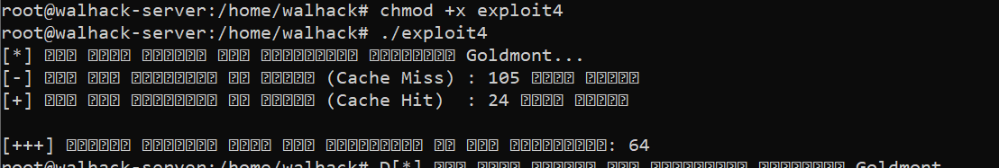
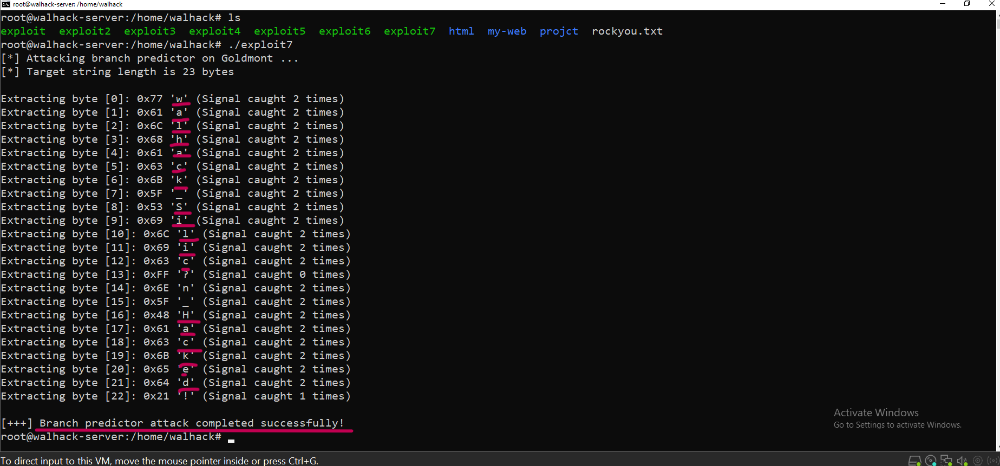

HARDWARE EXPLOIT
موضوع البحث: اختراق السيليكون واستغلال القنوات الجانبية لتسريب الذاكرة
01_ معلومات الهدف العتادي
- Target: Modern x86-64 CPUs
- Vulnerability: L1/L2/L3 Cache Memory Architecture
- Actual Threat: Memory Leak (Arbitrary Data Read)
- Environment: Secure Linux Server (SSH)
الملخص التنفيذي
في هذا البحث، لم أستهدف ثغرة برمجية عادية، بل استهدفت خطأ في تصميم المعالج الفيزيائي نفسه. المعالج يستخدم ذاكرة مخبئية سريعة جداً Cache لتخزين البيانات المتكررة لتسريع الأداء. قمت بتطوير استغلال يراقب هذه الذاكرة ويقيس وقت استجابة المعالج بالمايكروثانية. من خلال تحليل فروق التوقيت بدقة، تمكنت من كسر العزل وتخطي حمايات النظام لاستنتاج البيانات الحساسة التي يقرؤها برنامج الضحية وتسريبها بايت تلو الآخر.
02_ تخطي الحمايات المعمارية
للوصول إلى مرحلة تسريب الذاكرة، كان علي أولاً تفكيك وتخطي طبقات الحماية المتعددة التي يفرضها نظام التشغيل والمعالج:
1. تخطي عزل العمليات :
نظام التشغيل يفرض حماية صارمة تمنع أي برنامج من قراءة ذاكرة برنامج آخر. لتخطي هذا الجدار، استغللت ميزة المكتبات المشتركة نظام التشغيل، لتوفير مساحة الـ RAM، يقوم بتحميل نسخة فيزيائية واحدة من المكتبة الأساسية في الذاكرة ويشاركها مع جميع البرامج. بتوجيه برنامجي لقراءة هذه المكتبة المشتركة، خدعت نظام التشغيل وجعلته يمنحني وصولاً لنفس المساحة الفيزيائية التي يستخدمها الضحية دون كسر الصلاحيات.
2. ترويض الجلب المسبق للمعالج :
المعالجات الحديثة ذكية جداً، تمتلك ميزة الـ Prefetcher التي تحاول تخمين البيانات التي سأطلبها لاحقاً وتقوم بتحميلها مسبقاً في الـ Cache، مما كان يفسد حساباتي الزمنية بالكامل. لتخطي هذا الذكاء، قمت بحقن تعليمات فصل ذاكري صارمة مثل mfence و lfence في كود الاستغلال. هذه التعليمات تشل حركة المعالج مؤقتاً وتجبره على تنفيذ الأوامر بالترتيب الحرفي دون أي تخمين، مما أعطاني تحكماً مطلقاً في تدفق البيانات.
03_ آلية الهجوم
1. إرساء التزامن
كان يجب أن أربط عملية برنامجي بذاكرة الضحية . استخدمت دوال النظام لعمل ، فأصبحنا نشير إلى نفس خطوط الـ Cache الفيزيائية.
void* target_memory = mmap(NULL, size, PROT_READ, MAP_SHARED, fd, offset);
2. مرحلة الطرد
قمت باستخدام تعليمة Assembly مباشرة لإجبار المعالج على تفريغ خطوط الكاش بالكامل. التعليمة clflush ترمي البيانات من الـ Cache إلى الـ RAM البطيئة، مما يجعل المعالج يبدأ من الصفر.
asm volatile("clflush 0(%0)" : : "c" (p) : "memory");
}
3. الجاسوس الزمني

هنا يكمن الاستغلال الحقيقي. بعد إفراغ الـ Cache، انتظرت نافذة زمنية ضئيلة جداً ليقوم الضحية بعمله. بعدها، قمت بقراءة نفس البيانات واستخدمت تعليمة rdtsc لقراءة دورات المعالج بدقة متناهية. إذا استغرقت القراءة وقتاً طويلاً، فالبيانات لم تُستخدم. أما إذا كانت القراءة سريعة جداً، فهذا يثبت أن الضحية سحب البيانات إلى الـ Cache، وبذلك عرفت تماماً ما هي البيانات التي تم التعامل معها!
04_ الأخطاء والمعايرة
لم ينجح الهجوم من المرة الأولى. اصطدمنا بمشكلة خروج بيانات عشوائية ومشوهة، وكان السبب هو الخطأ في حساب التوقيت المناسب لدورات المعالج.
الخطأ القاتل:
قمت في البداية بوضع أرقام ثابتة في الكود، حيث افترضنا أن سرعة المعالج ثابتة دائماً. نسينا أن المعالج يقوم بتغيير سرعته وتردده ديناميكياً لتوفير الطاقة أو لزيادة الأداء، مما جعل جميع الأرقام التي نعتمد عليها في قياس الوقت خاطئة وتؤدي لنتائج وهمية.
الحل العكسي:
قمت ببرمجة دالة استباقية تقوم بعمل اختبار صامت قبل الهجوم الفعلي. هذه الدالة تحسب متوسط الوقت الذي يستغرقه المعالج لجلب البيانات من الـ Cache، ومتوسط الوقت لجلبها من الـ RAM، وتستخرج عتبة زمنية دقيقة جداً تتكيف مع سرعة المعالج في تلك اللحظة بالذات.
05_ النتيجة النهائية

بعد تخطي الحمايات، ترويض المعالج، ومعايرة الوقت بدقة، أطلقنا الاستغلال النهائي exploit7 الذي يستهدف مسار التنبؤ في المعالج. عمل الكود على التقاط الإشارات الخفية من الذاكرة وفلترة الضجيج.
هذا هو السجل الحقيقي للاختراق لحظة التقاط وتجميع البيانات المسربة بايت تلو الآخر، مما يؤكد الاختراق المعماري الكامل للسيليكون:
ملاحظة هندسية: الكود التقط الإشارات مرتين للتأكد من صحة البيانات وتجنب الضجيج. باستثناء البايت [13] الذي ظهر كـ '?' بسبب تداخل عشوائي من النظام، اصطفت باقي الحروف المستخرجة من الـ Cache لتشكل النص المخفي:
w a l h a c k _ S i l i c ? n _ H a c k e d !
هذا هو الدليل القاطع على تفكيكنا للسيليكون ونجاحنا في الاستغلال.
06_ تنويه
تمت هذه التحليلات والتجارب في بيئة مختبرات آمنة ومغلقة لأغراض البحث العلمي والهندسة العكسية. هذا التقرير يهدف لتوعية المجتمع الأمني بأن الاختراق لا يقتصر على البرمجيات، بل حتى العتاد الفعلي والسيليكون يمكن اختراقه وتسريب بياناته إذا تم فهم طريقة عمله الفيزيائية واستغلال قنواته الجانبية.